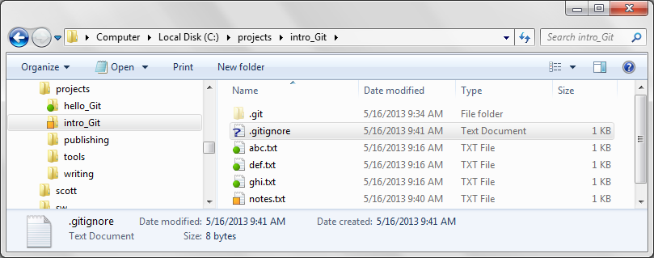
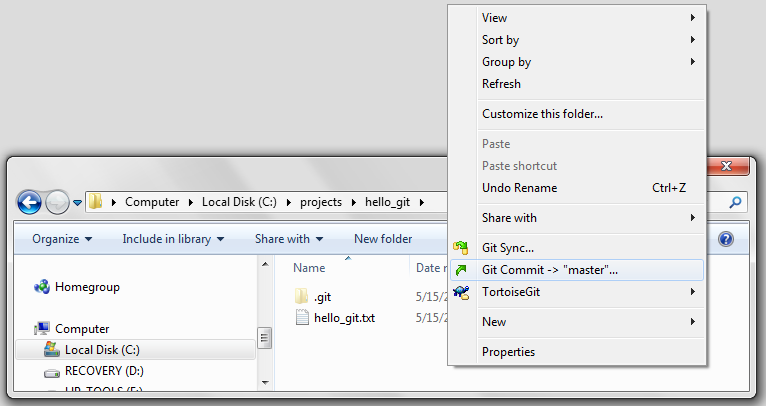
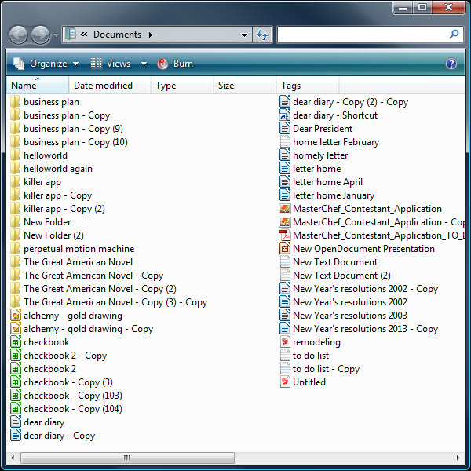

Git for you
This describes why Git and TortoiseGit might be useful to you. If instead you want a quick start with Git and TortoiseGit go to Hello Git.
Git[1] version control helps you keep files organized[2]. Although written first for programmers to keep track of their source files[3], Git is for non-programmers as well[4]. This is especially true for Microsoft Windows users when Git is combined with TortoiseGit.[5] Run Git through TortoiseGit on Windows Explorer[6].
Windows Explorer with TortoiseGit icon overlays

TortoiseGit puts colored icon overlays on files and folders where there are Git repositories. These icon overlays indicate the state of the repository and its files and folders. Above the normally hidden .git folder is also shown.
Windows Explorer TortoiseGit right-click menu commands

TortoiseGit provides access to Git through right-click menu commands.
Problems of not using version control
Almost everyone keeps copies of their important computer files. After all the catchy acronym LOCKSS, Lots of Copies Keeps Stuff Safe,[7] is basically true.
One simple but error prone way to keep track of file edits is to copy and number files and folders, e.g. my_file.txt, my_file_1.txt, my_file_2.txt etc.[8] Working with loose copies is error prone, "Did I accidentally edit an old copy? Which is the newest now? How do I merge two files? Which revision did I send?"
Also loose copies can take a lot of space. Each loose copy after all is a complete copy of the file.
Loose copies of files are error prone and inefficient with storage space.

The picture above shows copies of files and folders in a poor attempt at keeping edit histories of files.
Git with TortoiseGit is easy for individuals and small groups to setup, learn and use.
Programmers created the first version control programs at least 40 years ago.[9] They created version control programs to better deal with the problems of keeping track of the many source files and changes that go into making programs.
Git like other version control programs keeps copies in an organized and space saving way. Use version control to remember what changed, when and why[2] and to keep copies efficiently.
Git unlike some version control programs works well for individuals and small groups. Use Git for yourself and small groups. No server is necessary in this case.
Git with TortoiseGit is easy for Microsoft Windows users to learn. Use Git with TortoiseGit to run Git through Windows Explorer. The TortoiseGit icon overlays show the status of files and folders and the right click pop-up menus give access to the Git commands.
Git's scalability to large groups is proven.[10] Git's scalability and appropriateness for individual and small group use might not be so obvious. A few Git characteristics make it a good choice for individual and small group version control.
- Git with TortoiseGit is easy for Microsoft Windows computer users to learn.
- Git is easy to install and configure since no server is needed for individual or small group use.
Having your Git repository on a file server or even just another computer has advantages. Since Git is a distributed version control system you can have multiple "copies" of the repository. This has the LOCKSS advantage and multiple copies in several places can make access for several people easier.
Git with TortoiseGit provides probably the easiest first use of version control for Windows computer users. TortoiseGit for many or most will provide more than enough access to Git. The Git TortoiseGit combination will serve them well. Others will switch from TortoiseGit to use the Git BASH command line and the Git GUI installed with Git. Others still will switch to one of the several other user interfaces to Git.[11]
Some of Git's advantages over many other version control systems
- Git puts the Git repository in a hidden .git folder where you create the repository. The repository is not somewhere else to be lost or disconnected from.[12]
- Git is so fast at switching from one variation (Git calls variations branches.) of your project's files and directories it can actually change how you work. You can quickly try variations and keep track of them in branches without cluttering, corrupting or loosing your master branch.[13]
- Git and TortoiseGit are both free and open source software.[14]
References
1. ^ Git official website and Git Wikipedia article, both retrieved on 2013 05 04
2. ^ What is Version Control? about 1:10 into the presentation it states "That saving the thing again and again is the goal and where version control helps." With revision control your saving-the-thing records "when you did it." You note "why you did it" and it keeps track of "what the contents of the change were, ... open for review at any time in the future". retrieved on 2013 06 01
3. ^ Git is thought of as a Source Code Management tool. SCM is defined as Source Code Management at about 7:50 into "Tech Talk: Linus Torvalds on git - YouTube". SCM is in the web address http://git-scm.com/ of the Git official website. both retrieved on 2013 06 01
4. ^ What is Version Control? States near its beginning "Knowledge worker, ... Your Daily Tasks: Create things, Save things, Edit things, Save the thing again", retrieved on 2013 06 01
5. ^ TortoiseGit official website retrieved on 2013 06 01
6. ^ "How to work with files and folders" in Windows 8 and Windows RT describes using "File Explorer (previously called Windows Explorer)". retrieved on 2013 06 01
7. ^ LOCKSS is the acronym used by http://www.lockss.org/ . Their digital preservation tools have nothing to do with the use of Git described here. I just like their acronym because LOCKSS helps one remember the truism, "Lots Of Copies Keep Stuff Safe". retrieved on 2013 06 01
8. ^ The book Pro Git by Scott Chacon in 1.1 Getting Started - About Version Control states "Many people’s version-control method of choice is to copy files into another directory...".
9. ^ Source Code Control System (SCCS) dates back to 1972 according to Wikipedia on SCCS. "The Source Code Control System" by Marc J. Rochkin in IEEE Transactions on Software Engineering Vol. SE-1 NO. 4 December 1975 describes SCCS. both retrieved on 2013 06 04
10. ^ The Linux Kernel development project on GitHub shows its contributors and commit activity at https://github.com/torvalds/linux/graphs . Over approximately 3 months starting in February and going into May 2013 there were about 100 different contributors with often over 1000 commits per week.
11. ^ Other user interfaces for Git are the command line Git BASH and Git GUI installed with Git and Git GUI Clients.
12. ^ On creating a Git repository "Git creates the .git directory, which is where almost everything that Git stores and manipulates is located." as stated in the book Pro Git by Scott Chacon at 9.1 Git Internals - Plumbing and Porcelain .
13. ^ ibid. [3] Git changing how you work because it is so fast at branching and merging is mentioned at about 40 minutes into Linus Torvalds' talk.
14. ^ Git and TortoiseGit are both released under the GNU General Public License version 2 (GPLv2) . Git lists what you may and may not do do with Git under the Free and Open Source button on the Git about page . The TortoiseGit home page mentions its GNU GPL v2 license . Free and open-source software (FOSS) is described on Wikipedia . each retrieved on 2013 06 04